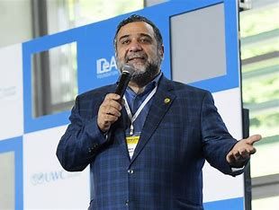
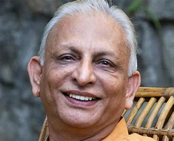

Our Mission
At Global NGO Foundation, we are driven by a singular, unwavering purpose: to empower, uplift, and transform lives. We believe in the boundless potential of individuals and communities, and we are dedicated to creating a world where every person, regardless of their circumstances, can thrive.
Our mission is to provide hope, opportunity, and sustainable solutions to the challenges our world faces. Through innovative programs, steadfast commitment, and the power of collective action, we seek to break barriers, foster equity, and leave a lasting, positive mark on our planet.
Our History
Founded with Purpose
The Global NGO Foundation was founded in 1995 by a group of passionate individuals who shared a common vision for a world where no one is left behind.Their unwavering commitment to humanitarian causes and social justice ignited the spark that led to the creation of our organization.
Key Milestones
Over the years, Global NGO Foundation has achieved significant milestones, leaving a lasting impact on communities around the world:
1995 - Inception: Our journey began with the establishment of Global Aid Foundation, with a focus on providing emergency relief and aid to regions affected by natural disasters and conflicts.
2000 - Expanding Reach: We expanded our operations, reaching more countries and providing long-term development programs, including education, healthcare, and livelihood support.
2010 - Sustainability Initiatives: We launched our first sustainability initiatives, promoting eco-friendly practices, conservation, and climate change adaptation projects.
2015 - Education for All: The "Education for All" campaign was initiated, ensuring access to quality education for underprivileged children in remote areas.
2020 - Pandemic Response: In response to the global pandemic, we launched the "COVID-19 Relief Fund," providing critical support to healthcare facilities and vulnerable communities.
Significant Achievements
Global NGO Foundation takes pride in several significant achievements:
Building and supporting schools in underserved regions, providing education to thousands of children.
Constructing clean water wells, improving access to safe drinking water for communities in need.
Distributing food and relief supplies during times of crisis, reaching millions of people affected by disasters.
Implementing sustainable agriculture and environmental projects that have positively impacted local ecosystems.
Facilitating medical missions and providing healthcare services to remote and underserved areas.
Ongoing Commitment
As we move forward, Global NGO Foundation remains steadfast in its commitment to alleviating suffering, fostering positive change, and creating a world where every person has the opportunity to lead a life of dignity and promise. We invite you to be a part of our journey and help us make a meaningful difference in the lives of those we serve.
Our Team

Jane Smith
Founder & CEO
Jane Smith is the visionary founder of Humanitarian Hope. With over two decades of experience in humanitarian work, she has dedicated her life to making a difference in the lives of those in need. Jane's commitment to social justice and her relentless pursuit of positive change have been the driving force behind the organization's impactful projects
Board Members

Jay Shah Board Chairman
John Adams is an advocate for education and youth empowerment. He brings a wealth of experience in education policy and is a key driver behind our educational initiatives.
Sarah Johnson Board Manager
Sarah Johnson is an environmentalist and conservationist with a deep love for nature. She plays a pivotal role in our sustainability and environmental projects.
Our Values
Compassion:
Upholding a caring and empathetic approach.It demonstrates genuine concern for beneficiaries and fosters trust.
Accountability:
Taking responsibility for actions and decisions.Ensures transparency, efficient resource use, and trust.
Transparency:
I Operating openly and honestly. Builds trust by sharing information and showcasing integrity.
Equity and Inclusivity:
Ensuring equal opportunities for all.Promotes fairness, justice, and addressing disparities.
Integrity:
Upholding strong moral and ethical principles. Maintains trust and credibility through aligned actions.
Empowerment:
Equipping individuals and communities for self-sufficiency.Breaks dependency cycles, fostering independence.